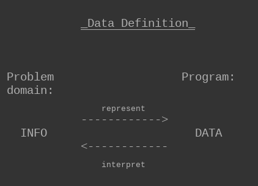
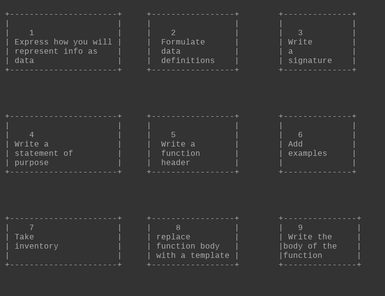

How To Design Programs (notes)
Table of Contents
- How to Design Programs (notes)
- I Fixed-Size Data
- 1.2 The Arithmetic of Strings
- 1.7 Predicates: Know Thy Data
- 2.1 Functions
- 2.3 Composing Functions
- 3 How to Design Programs
- 3.1 Designing Functions
- 3.3 Domain Knowledge
- 3.4 From Functions to Programs
- 3.5 On Testing
- 3.6 Designing World Programs
- 4 Intervals, Enumerations, and Itemizations
- 4.1 Programming with Conditionals
- 4.3 Enumerations
- I Fixed-Size Data
How to Design Programs (notes)
This are some notes from the book How To Design Programs, second edition.
I Fixed-Size Data
Every programming language comes with a language of data and a language of operations on data. The first language always provides some forms of atomic data; to represent the variety of information in the real world as data, a programmer must learn to compose basic data and to describe such compositions. Similarly, the second language provides some basic operations on atomic data; it is the programmer’s task to compose these operations into programs that perform the desired computations.
- Lenguage:
- data:
- Atomic data: to represent information as data
- operations on data:
- Basic operations on atomic data: to compose these operations into programs
- data:
1.2 The Arithmetic of Strings
Programming languages are about computing with information, and information comes in all shapes and forms. For example, a program may deal with colors, names, business letters, or conversations between people. Even though we could encode this kind of information as numbers, it would be a horrible idea. Just imagine remembering large tables of codes, such as 0 means “red” and 1 means “hello,” and the like.
Instead, most programming languages provide at least one kind of data that deals with such symbolic information.
1.7 Predicates: Know Thy Data
A predicate … is a function that consumes a value and determines whether or not it belongs to some class of data.
2.1 Functions
Since variables are about inputs, not mentioning them in the expressions means that the function’s output is independent of its input and therefore always the same. We don’t need to write functions or programs if the output is always the same.
Variables aren’t data; they represent data…
The variables in a function header, that is, the variables that follow the function name, are placeholders for unknown pieces of data, the inputs of the function. Mentioning a variable in the function body is the way to use these pieces of data when the function is applied and the values of the variables become known.
2.3 Composing Functions
A program rarely consists of a single function definition. Typically, programs consist of a main definition and several other functions and turn the result of one function application into the input for another. In analogy to algebra, we call this way of defining functions composition, and we call these additional functions auxiliary functions or helper functions.
In general, when a problem refers to distinct tasks of computation, a program should consist of:
- one function per task
- and a main function that puts it all together
We formulate this idea as a simple slogan:
Define one function per task.
3 How to Design Programs
It is critical to learn how to get from a problem statement to a program. We need to determine what is relevant in the problem statement and what can be ignored. We need to tease out what the program consumes, what it produces, and how it relates inputs to outputs. We have to know, or find out, whether the chosen language and its libraries provide certain basic operations for the data that our program is to process. If not, we might have to develop auxiliary functions that implement these operations. Finally, once we have a program, we must check whether it actually performs the intended computation. And this might reveal all kinds of errors, which we need to be able to understand and fix.
A good program comes with:
- A short write-up that explains what it does
- What inputs it expects
- And what it produces
- Ideally it also comes with some assurance that it actually works
- In the best circumstances, the program’s connection to the problem statement is evident so that a small change to the problem statement is easy to translate into a small change to the program.
3.1 Designing Functions
Information and Data:
The purpose of a program is to describe a computational process that consumes some information and produces new information.
All this information comes from a part of the real world - called the program's domain - and the results of a program's computation represent more information in this domain.
Information plays a central role in our description. Think of information as facts about the program’s domain.
For a program to process information, it must turn it into some form of data in the programming language … then it processes the data … and once it is finished, it turns the resulting data into information again.
An interactive program may even intermingle these steps, acquiring more information from the world as needed and delivering information in between.
For simple kinds of information, designing such program pieces is trivial;
for anything other than simple information you need to know about parsing, for example, and that immediately requires a lot of expertise in program design.
Software engineers use the slogan model-view-controller (MVC) for the way BSL and DrRacket:
- separate data processing from parsing information into data
- and turning data into information.
Given the central role of information and data, program design must start with the connection between them.
Specifically, we, the programmers, must decide how to use our chosen programming language to represent the relevant pieces of information as data and how we should interpret data as information.

Suppose you are designing a program that consumes and produces information in the form of numbers. While choosing a representation is easy, an interpretation requires explaining what a number such as 42 denotes in the domain:
- 42 may refer to the number of pixels from the top margin in the domain of images;
- 42 may denote the number of pixels per clock tick that a simulation or game object moves;
- 42 may mean a temperature, on the Fahrenheit, Celsius, or Kelvin scale for the domain of physics;
- 42 may specify the size of some table if the domain of the program is a furniture catalog; or
- 42 could just count the number of characters in a string.
The key is to know how to go from numbers as information to numbers as data and vice versa.
Since this knowledge is so important for everyone who reads the program, we often write it down in the form of comments, which we call data definitions.
- A data definition serves two purposes:
- 1. it names a collection of data —a class— using a meaningful word.
- 2. Computer scientists use “class” to mean something like a “mathematical set.” it informs readers how to create elements of this class and how to decide whether some arbitrary piece of data belongs to the collection.
Here is a data definition for one of the above examples:
;; A Temperature is a Number.
;; interpretation represents Celsius degreesThe first line introduces the name of the data collection, Temperature, and tells us that the class consists of all Numbers.
The Design Process1
- Express how you wish to represent information as data. A one-line comment suffices, example:
; We use numbers to represent centimeters.
- Formulate data definitions: like the one for Temperature, for the classes of data you consider critical for the success of your program.
- Write down a (function) signature
- Write a statement of purpose
- Write a function header
- Add examples
- Take inventory
- Replace the function body with a template
- Write the body of the function
Function Signature:
A function signature is a comment that tells the readers of your design:
1.- how many inputs your function consumes
2.- from which classes they are drawn
3.- and what kind of data it produces
Statement Of Purpose:
A purpose statement is a … comment that summarizes the purpose of the function in a single line.
If you are ever in doubt about a purpose statement, write down the shortest possible answer to the question:
what does the function compute?
Every reader of your program should understand what your functions compute without having to read the function itself
A multi-function program should also come with a purpose statement.
Function Header:
A header is a simplistic function definition, also called a stub.
- Pick one variable name for each class of input in the signature;
- The body of the function can be any piece of data from the output class.
Take Inventory:
Take inventory to understand what are the givens and what we need to compute. For the simple functions we are considering right now, we know that they are given data via parameters.
While parameters are placeholders for values that we don’t know yet, we do know that it is from this unknown data that the function must compute its result.
To remind ourselves of this fact, we replace the function’s body with a template. For now, the template contains just the parameters, so that the preceding example looks like this:
(define (area-of-square len) (... len ...))The dots remind you that this isn’t a complete function, but a template, a suggestion for an organization.
Write The Body Of The Function:
In general, … means to program, though often in the narrowest possible way, namely, to write executable expressions and function definitions.
To us, … means to replace the body of the function with an expression that attempts to compute from the pieces in the template what the purpose statement promises.
Testing:
Test the function on the examples you worked out before.
If the result doesn’t match the expected output, consider the following three possibilities:
1.- You miscalculated and determined the wrong expected output for some of the examples
2.- Alternatively, the function definition computes the wrong result When this is the case, you have a logical error in your program, also known as a bug
3.- Both the examples and the function definition are wrong
When you do encounter a mismatch between expected results and actual values, we recommend that you:
- first reassure yourself that the expected results are correct.
- If so, assume that the mistake is in the function definition.
- Otherwise, fix the example and then run the tests again.
If you are still encountering problems, you may have encountered the third, somewhat rare, situation.
THE DESIGN PROCESS

3.3 Domain Knowledge
It is natural to wonder what knowledge it takes to code up the body of a function. this step demands an appropriate grasp of the domain of the program.
Indeed, there are two forms of such domain knowledge:
1.- Knowledge from external domains, such as:
- mathematics,
- music,
- biology,
- civil engineering,
- art, and so on.
2.- Knowledge about the library functions in the chosen programming language
You can recognize problems that demand domain knowledge from the data definitions that you work out.
3.4 From Functions to Programs
Not all programs consist of a single function definition.Some require several functions.
Multi-function programs come about because interactive programs automatically need functions that handle key and mouse events, functions that render the state as music, and possibly more.
Sometimes the problem statement itself suggests these tasks … other times you will discover the need for auxiliary functions as you are in the middle of designing some function.
For these reasons, we recommend keeping around a list of needed functions or a wish list.
- Each entry on a wish list should consist of three things:
- A meaningful name for the function
- A signature
- And a purpose statement
For the design of an interactive program:
- you can put the event handlers
- the stop-when function
- and the scene-rendering function on the list.
As long as the list isn’t empty, pick a wish and design the function.
- If you discover during the design that you need another function:
- put it on the list
- When the list is empty, you are done
3.5 On Testing
It is critical to mechanize tests instead of performing them manually.
For the design of this function, you may formulate the tests such as the following:
(check-expect (render 50) image/real) (check-expect (render 200) image/real)Alternatively, you could write them like this:
(check-expect (render 50) (place-image CAR 50 Y-CAR BACKGROUND)) (check-expect (render 200) (place-image CAR 200 Y-CAR BACKGROUND))This alternative approach helps you figure out how to express the function body and is therefore preferable.
One way to develop such expressions is to experiment in the interactions area.
One day you will switch to some other programming language … one of your first tasks will be to figure out its unit-testing framework.
4 Intervals, Enumerations, and Itemizations
At the moment we have 4 choices to represent information as data:
- numbers
- strings
- images
- Boolean values
Actual designers need additional ways of representing information as data.
New forms of data descriptions
a.- enumerations
- collection with a finite number of element
- lists every single piece of data that belongs to it
b.- intervals
- collections of elements that satisfy a specific property
- collection with infinitely many elements
- specifies a range of data
c.- itemizations
- specifies ranges in one clause of its definition
- and specific pieces of data in another clause
Intervals:
Infinite may just mean “so large that enumerating the elements is entirely impractical.”
Defining enumerations and intervals means distinguishing among different kinds of elements.
- To distinguish in code requires:
- conditional functions:
functions that choose different ways of computing results depending on the value of some argument.
4.1 Programming with Conditionals
In many problem contexts, a function must distinguish several different situations: We always use cond for situations when:
- We wish to remind the reader of our code that some distinct situations come directly from data definitions
- With a cond expression, you can use one line per possibility
- too complex conditions in a cond expression:
- else keyword for the very last cond line ("in all other cases")
4.3 Enumerations
The main idea of an enumeration is:
- it defines a collection of data as a finite number of pieces of data
Each item explicitly:
- Spells out which piece of data belongs to the class of data that we are defining. A data representation in which every possibility is listed
- When a function’s input is a class of data whose description spells out its elements on a case-by-case basis:
- The function should distinguish just those cases
- and compute the result on a per-case basis
Examples:
; A MouseEvt is one of these Strings: ; – "button-down" ; – "button-up" ; – "drag" ; – "move" ; – "enter" ; – "leave"; A TrafficLight is one of the following Strings: ; – "red" ; – "green" ; – "yellow" ; interpretation the three strings represent the three ; possible states that a traffic light may assume; TrafficLight -> TrafficLight ; yields the next state given current state s (check-expect (traffic-light-next "red") "green") (define (traffic-light-next s) (cond [(string=? "red" s) "green"] [(string=? "green" s) "yellow"] [(string=? "yellow" s) "red"]))
Footnotes:
The lodash documentation can be used as example of this approach:
/** * Adds two numbers. * * @static * @memberOf _ * @since 3.4.0 * @category Math * @param {number} augend The first number in an addition. * @param {number} addend The second number in an addition. * @returns {number} Returns the total. * @example * * _.add(6, 4); * // => 10 */ var add = createMathOperation(function(augend, addend) { return augend + addend; }, 0);